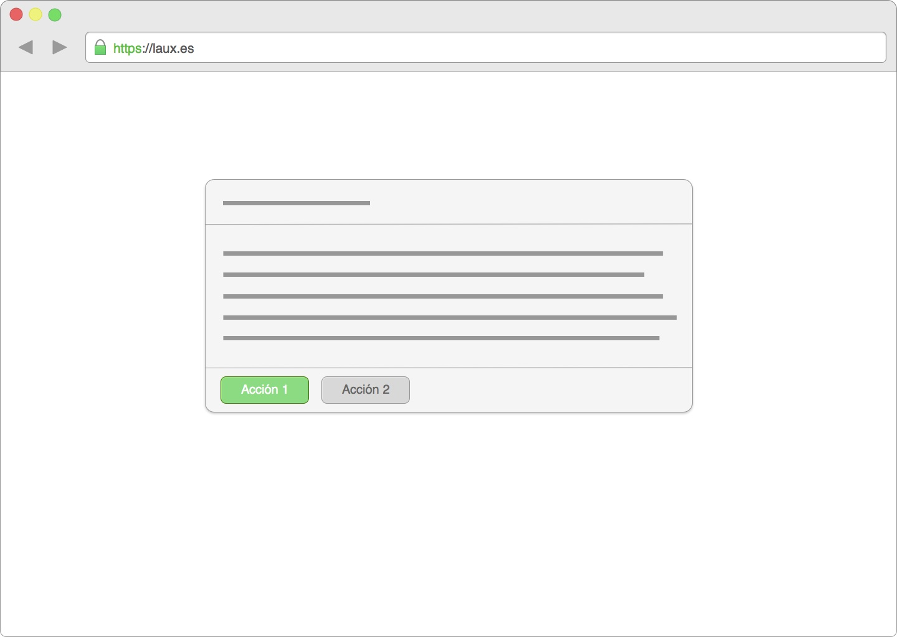

Posición de los botones
Como continuación al artículo Ok y Cancelar no es suficiente, dónde se hablaba sobre el contenido de los botónes en cuadros de diálogos y formularios, en este vamos a tratar sobre el posicionamiento de dichos botones.
Big
Generalmente, las personas que utilizan nuestras aplicaciones están acostumbradas a leer de izquierda a derecha. Mientras rellenamos los datos de un formulario o leemos un cuadro de diálogo, las líneas se van sucediendo, extrayendo de ellas el contenido relevante.
En un estudio realizado por Luke Wroblewski, 23 personas realizaron la tarea de completar un formulario y enviarlo. Cada formulario tenía una disposición y morfología distinta de botones de "enviar" y "cancelar".
Como conclusión, dada la alineación del texto y la dirección de lectura de las personas que realizaron el estudio, los diseños más eficientes eran los que situaban los botones a la izquierda del formulario. Los diseños que situaban los botones a la derecha no eran tan eficientes en visualización, pero también tuvieron un 100% de éxito en el envío.

Cuadro de diálogo con los botones alineados a la izquierda
Si queréis ampliar más, os dejo el enlace al estudio: Primary & Secondary Actions in Web Forms.
Small
En el caso de las pantallas de móviles, tendemos a coger el móvil con una sola mano y usamos el pulgar para navegar. En este caso, la zona de confort (zona azul del dibujo) para pulsar con nuestro pulgar se reduce, por lo que si algún elemento se sale de ese límite nos obligará a coger el móvil con la otra mano o a estirar el dedo tapando el contenido.
(Quiero remarcar que este esquema está pensado para personas diestras o zurdos que utilicen el móvil con la mano derecha)
Zona de confort de pulsación con el pulgar
Además, debido a la anchura de la pantalla, podemos captar toda la información de una línea en un solo vistazo, por lo que cambiar la posición de los botones no supone una ruptura en nuestro flujo de lectura.
Dadas estas condiciones, la opción más óptima en móviles es situar los botones a la derecha, ya que entrarían dentro de la zona de pulsación del pulgar.

Botones de acción dentro de la zona de pulsación del pulgar
Eficiencia
Según el estudio de Luke las personas solo tuvieron problemas a la hora de lidiar con botónes separados e iguales, por lo que si descartamos esa pequeña mejora de eficiencia, mientras distingamos ambos botones y los coloquemos juntos, para un diseño web será más que suficiente.
Os dejo otra referencia más, por si os animáis a leerla ;)